Le choix de l’île d’Elbe par le tsar Alexandre : retour sur une décision lourde de conséquences
par Pierre BRANDA
En 1814, deux ans après la désastreuse campagne de Russie, la France était envahie. Malgré les succès tactiques d’un Napoléon inspiré, les troupes de la coalition formée par la Russie, l’Autriche, l’Angleterre et la Prusse avançaient inexorablement vers le cœur de l’Empire français. Le 30 mars, Paris capitula. Le 1er avril un gouvernement provisoire fut institué. Le 2, le Sénat prononça la déchéance de Napoléon. Le corps de Marmont, l’un des derniers espoirs militaires de l’empereur, fit défection le 4. En quelques jours, Napoléon perdit tous ses soutiens ou presque : « Le repos était devenu un besoin pour tous ; on en avait soif : citoyen, soldat, général, tous voulaient la paix » commente le ministre des Relations extérieures Caulaincourt1. La chute du régime impérial était désormais inéluctable. A la tête du gouvernement provisoire, Talleyrand était sur le point de réussir un joli coup politique en réinstallant un Bourbon sur le trône de France.
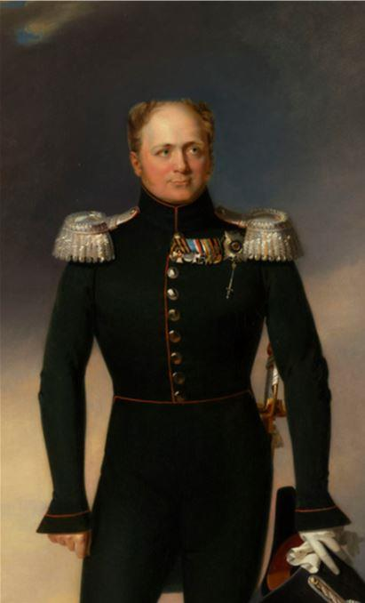Quant à Napoléon, les Alliés souhaitaient qu’il quitte au plus vite le sol de France. Aussi, une discussion s’engagea entre Caulaincourt et l’homme fort de la coalition, le tsar Alexandre. Les deux hommes s’appréciaient depuis plusieurs années, ce qui facilita les choses. Après dix jours de longues négociations, un accord fut trouvé qui satisfaisait en apparence tous les partis : Napoléon acceptait de s’éloigner pour rejoindre un « établissement convenable » où il serait libre et relativement bien protégé. Mais en réalité, le traité dit de Fontainebleau du 11 avril 1814 fut loin de faire l’unanimité : l’Autriche et la Prusse l’approuvèrent faute de mieux tandis que l’Angleterre et le gouvernement provisoire français plus réservés encore n’y consentirent que partiellement.
De son côté, l’empereur vaincu fut plus résigné qu’enthousiaste. Bref, chacun signa sans grande conviction, ce qui augurait très mal de la suite des évènements.
Une « banale conversation »
La bataille de Paris se joua en quelques heures. Les 39 000 hommes qui défendaient la capitale ne résistèrent pas longtemps aux 100 000 soldats étrangers qui les assiégeaient. Le 31 mars à 2 heures du matin, les aides de camp de Marmont signèrent la capitulation. Au même moment, Napoléon était sur le point de rejoindre la capitale avec ses troupes. En apprenant la nouvelle de la capitulation, il accusa le coup : « Quatre heures trop tard, quelle fatalité ! » dit-il alors dépité2. Cette reddition l’obligea à prendre la route de Fontainebleau.
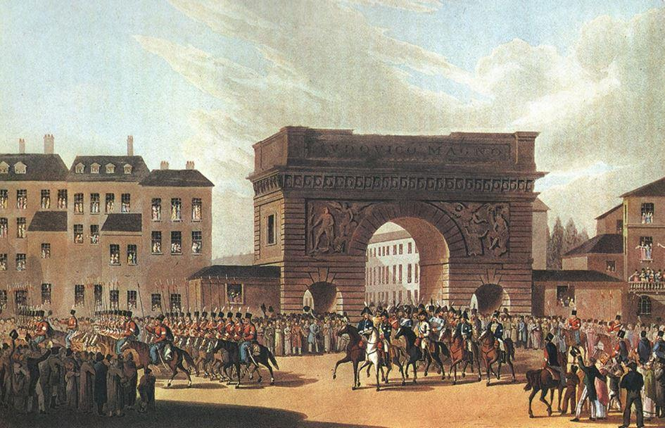
Entrée des troupes russes à Paris
Comprenant que la situation militaire était désormais fortement compromise, il demanda après quelques hésitations à Caulaincourt de se rendre auprès des Alliés pour « négocier et conclure la paix, promettant de ratifier tout ce qu’il fera pour le bien de notre service »3. Muni de sauf-conduits, le ministre se rendit sans perdre un instant au quartier général des coalisés à Bondy après un détour par la capitale. A son arrivée, il fut fraîchement accueilli par le ministre des Affaires étrangères russe, Nesselrode. Le diplomate ne mâcha pas ses mots : « Votre mission est inutile en ce moment ; […] l’empereur Napoléon s’est toujours refusé à faire la paix : aujourd’hui les souverains ne veulent plus traiter avec lui »4. Caulaincourt demanda quand même à être reçu par Alexandre, ce qu’il obtint non sans mal.
Contrairement à son ministre, le tsar fut plutôt aimable avec lui. Il connaissait fort bien le ministre de Napoléon et s’entendait bien avec lui. Après une première mission diplomatique en 1801, Caulaincourt avait été ambassadeur de France à la cour du tsar à Saint-Pétersbourg de 1807 à 1811 et avait su gagner les faveurs du monarque5. Malgré cette sorte de proximité, l’entretien tourna court, Alexandre ne voulant pas négocier pour le moment. Le duc de Vicence rencontra encore le commandant des troupes autrichiennes, Schwarzenberg, sans plus de succès.
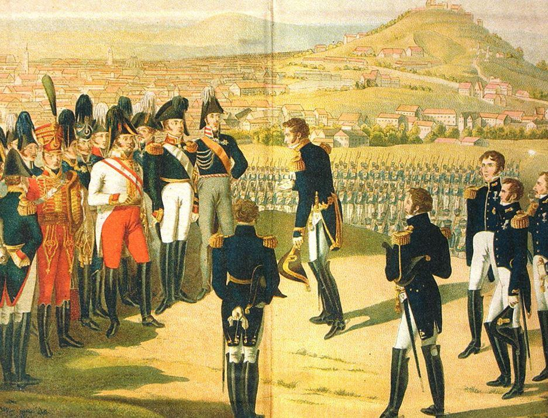
Le maréchal Marmont remet les clés de Paris au tsar Alexandre 1er de Russie
Les Alliés n’avaient apparemment plus l’intention de composer avec l’empereur. Caulaincourt put d’ailleurs lire quelques heures après ses entretiens une proclamation fraîchement placardée sur les murs de la capitale dans laquelle les nouveaux vainqueurs y affirmaient sans la moindre ambiguïté, que dorénavant ils « ne traite[raient] plus avec Napoléon Bonaparte ». Il crut cependant pouvoir reprendre la main quand quatre nouveaux entretiens avec le tsar furent organisés entre le 31 mars et le 2 avril. Alexandre semblait mieux disposé vis à vis de Napoléon, déclarant même lors de la troisième entrevue que « rien n’[était] encore décidé ».6
Tout semblait donc encore possible. En réalité, l’autocrate temporisait attendant que la situation politique française se décante un peu. Le quatrième jour, le tsar changea brusquement de ton : « L’abord de l’empereur me glaça, m’atterra » écrit Caulaincourt dans ses Mémoires7. Le vote imminent par le Sénat de la déchéance de Napoléon expliquait ce changement d’attitude. Alexandre était à présent décidé : il respecterait ce qu’il appelait « le vœu national », précisant à Caulaincourt « qu’on n’imposerait à la France ni un gouvernement ni un souverain qui ne fût pas de son choix et que l’intégrité du territoire était garantie par toutes les puissances»8.
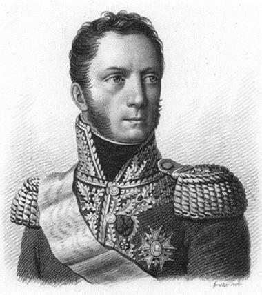Après le vote du Sénat qu’il considérait comme une assemblée souveraine, il ne laissait d’autre choix à Napoléon que d’abdiquer. Il était en revanche prêt à lui offrir une digne retraite : « L’empereur Alexandre ajouta qu’il ferait tout ce qu’il dépendrait de lui pour que l’empereur Napoléon eût un établissement convenable et indépendant ; qu’il en prenait avec moi l’engagement le plus formel » se souvient le duc de Vicence.
La discussion s’engagea alors sur ce point précis. Le tsar posa ses conditions :
« Ni la France, ni l’Italie, ni le continent » n’étaient envisageables comme lieu de séjour. Il proposa de l’accueillir en Russie et de le traiter en souverain : « Je vous ouvre les portes : choisissez » lança-t-il à Caulaincourt. Ce dernier repoussa « toute idée d’habitation aux colonies à cause du climat » et l’Italie lui parût la seule solution possible, un « bon climat » étant indispensable à l’empereur. Son abdication, ce « si grand sacrifice », valait bien un « petit dédommagement » fit il valoir. En d’autres termes : soyez généreux avec lui, et il y avait une chance pour que Napoléon renonce au trône sans condition. L’argument du ministre de Napoléon fit mouche. Tout à coup, pensant trouver une voie médiane, Alexandre prononça le nom de l’île d’Elbe. Cette solution satisfaisait les deux parties : Napoléon s’établissait en Italie, ce que souhaitait Caulaincourt, tout en vivant retiré du continent, ce qu’exigeait Alexandre. On semblait enfin d’accord : « C’est ce mot que j’érigeai en offre formelle, en engagement sacré qui devint, un peu plus tard, le salut de l’empereur » expliqua le ministre de Napoléon. Ce fut donc au détour d’une « banale conversation » que la solution de l’île d’Elbe fut évoquée pour la première fois9. Cette négociation à brûle-pourpoint allait servir de base au futur traité de Fontainebleau. Mais pour le moment, personne ne pouvait encore le croire tant la conclusion d’un accord semblait lointaine.
Des négociations difficiles
De retour à Fontainebleau le 2 avril au soir, Caulaincourt eut « sur-le-champ un long et douloureux entretien avec l’empereur »10. Commandant encore à plusieurs dizaines de milliers de soldats, dont le corps du maréchal Marmont, Napoléon continuait à croire qu’il pouvait encore traiter avec les Alliés et ne voulait pas entendre parler de retraite : « Je n’ai besoin de rien. Il ne m’en coûtera pas de vivre comme un simple citoyen » affirma-t-il à son grand écuyer11. Devant les mines défaites de ses maréchaux et sous la pression des mauvaises nouvelles qui arrivaient de toutes parts, il consentit deux jours plus tard à abdiquer, mais en faveur de son fils, le roi de Rome. Caulaincourt accompagné des maréchaux Ney et Macdonald furent désignés pour présenter sa déclaration aux Alliés. « Quant à moi, je n’ai besoin de rien » leur dit-il de nouveau12. Le 5 avril au soir, les envoyés de Napoléon furent reçus par le tsar (ils l’avaient déjà vu sans résultat à 3 heures du matin). Précisons que le tsar logeait au n° 2 de la rue Saint-Florentin, au domicile d’un certain … Talleyrand. La partie s’annonçait donc comme serrée. En outre, au cours de la journée, la nouvelle de la défection du corps de Marmont fragilisa la position des représentants de l’empereur. Si bien que le tsar leur déclara qu’il fallait « que l’empereur abdique sans conditions ». Pour prix de son renoncement, « on lui fer[ait] une existence ; on lui donnera un état indépendant ».13
Constatant que seul le sort personnel de Napoléon était négociable, Caulaincourt « introduisit adroitement la question » rapporte Macdonald dans ses Souvenirs14. On reparla du futur lieu de retraite de l’empereur, le tsar préférant toujours un « établissement lointain » et Caulaincourt, un établissement « plus rapproché et surtout un bon climat ». La question de la sécurité fut aussi abordée : le grand écuyer souligna qu’il fallait « un point fortifié qui le mît au besoin à l’abri d’une attaque ou d’un assassinat »15. Il proposa la Corse, la Sardaigne et Corfou mais Alexandre refusa, jugeant ces territoires bien trop grands. Répondant à toutes les exigences, le choix de l’île d’Elbe s’imposa à nouveau et fut retenu par les deux parties. Restait à faire accepter cette solution par Napoléon. Caulaincourt et Macdonald arrivèrent au château de Fontainebleau le 6 avril à 1 heure du matin. Cette nuit-là, l’empereur dormait si profondément que le duc de Vicence fut obligé de le secouer « assez rudement » pour le réveiller. Les deux hommes lui donnèrent le résultat des négociations : en échange de son abdication sans conditions, on ne lui offrait qu’un lieu de retraite convenable. Le grand écuyer lui expliqua alors pourquoi il n’était pas possible de lui accorder la souveraineté de la Corse, de Corfou ou de la Sardaigne. Napoléon hésita un moment puis accepta : « Eh bien ! Je choisis l’île d’Elbe. Connaissez-vous cette île, messieurs ? Y a-t-il un palais, un château, une habitation convenable, passable ? »16. Le lendemain, il abdiqua en lançant cette phrase célèbre à ses maréchaux : « Vous voulez du repos, ayez en donc ! ».
En vue de la conclusion d’un accord, Napoléon rédigea des instructions précises et détaillées à ses négociateurs17. Désormais, il savait ce qu’il voulait et entendait bien se faire respecter. Il n’était plus question pour lui et les siens d’être traité comme de « simples particuliers ». Il acceptait l’île d’Elbe comme lieu de résidence mais à condition qu’il reçoive 2 millions de francs de revenu annuel. Pour son épouse, il souhaitait la Toscane ou des terres produisant un revenu net de 3 millions. Pour chacun de ses frères et sœurs, il demandait une rente annuelle de 500 000 francs. Les membres de la famille impériale devaient selon lui conserver leurs rangs. Autre point important, l’impératrice devait le rejoindre. Elle pourrait au préalable effectuer un court séjour à Savone ou à Gênes, mais elle ne devait pas se rendre à Vienne. Il craignait, et l’avenir allait lui donner raison, qu’une « main étrangère abusant de la force » impose à son épouse « ce que tout homme moral doit improuver », c’est à dire l’éloigner de lui. La remise de l’abdication sans condition, qu’il signa et remit à Caulaincourt, ne devait intervenir qu’une fois le traité ratifié. Très confiant dans la suite des négociations, il ordonna le jour même aux généraux de la Garde Petit et Pelet de former l’escorte qui devait le suivre en exil. Ces dispositions étaient toutefois prématurées et le traité était loin d’être finalisé, comme allait le démontrer la suite des évènements.
En remettant ses instructions, Napoléon apparut très solennel : « C’est à vous, Caulaincourt, que je confie mon acte d’abdication, à vous personnellement, puisque je confie par là, non seulement mes intérêts personnels, mais ceux de toute ma famille et de tout ce qui m’est cher » dit-il d’un ton grave18. Peu après, le duc de Vicence se mit en route pour Paris, accompagné par Macdonald et Ney, chargés pour leur part de négocier les conditions d’armistice.
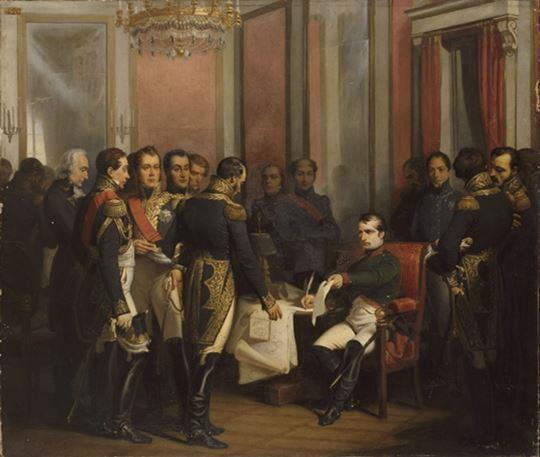
Napoléon signe son abdication à Fontainebleau le 4 avril 1814. Tableau de François Bouchot (1843).
Alexandre les reçut une première fois à minuit le 6 avril, se montrant plutôt satisfait de la bonne volonté de Napoléon et promit de « faire tout ce qui serait en son pouvoir » pour que les choses se passent au mieux19. Il réaffirma que même si l’île d’Elbe était déjà « sujet à beaucoup de critiques fondées », il tiendrait l’ « espèce d’engagement » qu’il avait pris20. Les choses concrètes furent remises au lendemain.
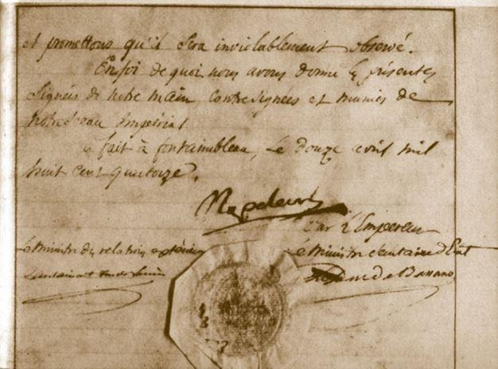
Première abdication conservée aux Archives nationales
Dans l’après-midi du 7, Alexandre prit connaissance sans mot dire de ce que souhaitait Napoléon. Il ne voulait donner sa réponse définitive qu’après avoir consulté ses alliés. Le soir, un faux bruit (appuyé tout de même par 3 rapports officiels) annonçant le départ de Napoléon pour la Bourgogne faillit tout remettre en cause. Malgré les démentis des envoyés de Napoléon, il fallut envoyer un officier russe à Fontainebleau pour lever les doutes d’Alexandre.
Après ce petit incident, les négociations reprirent deux jours durant. L’armistice militaire fut rapidement signé mais en raison de l’absence des ministres anglais et autrichiens, la question de l’île d’Elbe n’avançait pas. Autre difficulté, le gouvernement provisoire de Talleyrand était très hostile à la solution proposée. Le « diable boiteux » et ses ministres voulaient à tout prix éloigner l’ « usurpateur » de l’Europe et « attachait un grand prix » à ce qu’il n’obtienne pas l’île d’Elbe. Cette attitude courrouça Alexandre. Recevant le nouveau gouvernement, il affirma « qu’il renoncerait à la Restauration plutôt que de manquer à sa parole », rajoutant, un brin perfide, « que les souverains n’étaient pas des girouettes à tout vent, comme des particuliers qui étaient amenés à faire des révolutions »21. L’allusion aux nombreux revirements politiques de Talleyrand était ici à peine voilée. Bien décidé à en finir, il obligea le président du gouvernement provisoire à rencontrer Caulaincourt en présence de Nesselrode le 8 avril au soir. En position de médiateur, les Russes comptaient bien faire avancer les négociations dans le sens souhaité par le tsar. Nullement impressionné par l’attitude d’Alexandre, le prince de Bénévent réaffirma que toutes les demandes de Napoléon étaient « exorbitantes », les rejetant « comme ne pouvant être admise en aucune manière ». Les prétentions financières des Bonaparte devaient selon lui se limiter à 25 000 francs de rente annuelle. Les discussions durèrent près de trois heures. Avec l’appui de Nesselrode, Caulaincourt eut le dernier mot mais Talleyrand ne prit aucun engagement formel. Il concéda tout au plus ne pas vouloir s’opposer à la volonté des Alliés si un traité venait à être signé, ce qui lui permettait de rester dans la négociation sans rien promettre.
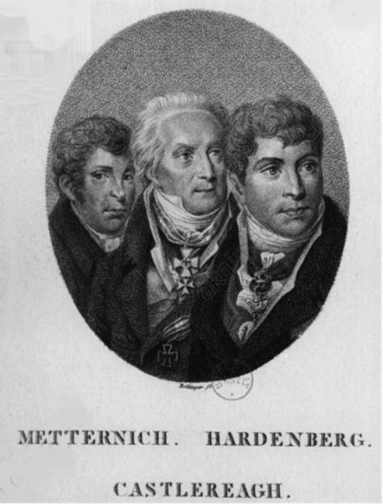Le 10 avril, l’Autrichien Metternich et l’Anglais Castlereagh arrivèrent enfin à Paris. Une réunion fut aussitôt organisée avec leurs homologues russe et prussien, à laquelle Talleyrand était lui aussi convié. La discussion s’engagea. Le ministre britannique se montra extrêmement réservé mais il ne voulait pas compromettre la « tranquillité de la France » et surtout remettre en cause ce qui avait été promis par la Russie22. Mais il n’avait pas l’intention de signer directement le traité, se contentant seulement de le reconnaître et d’assurer « toutes les sûretés […] pour le voyage de l’empereur, un officier pour l’accompagner et même des frégates anglaises pour son transport à l’île d’Elbe »23.
Autrement dit, les Anglais se défausseraient sur les autres puissances comme si cette affaire ne les concernait pas. Le ministre autrichien se montra très prudent lui aussi, rejetant la solution toscane pour l’impératrice qui était pourtant la fille de l’empereur d’Autriche : « [Il] montrait hautement et en toute occasion qu’on eût pensé à des indemnités en Italie et peu satisfait des promesses que nous avait faites l’empereur Alexandre auquel, disait-il tout haut, cela ne coûtait rien » commenta le duc de Vicence24. Le 10 avril, on était dans l’impasse comme en témoigne cette lettre de Caulaincourt à Napoléon : « L’arrivée de M. de Metternich et de lord Castlereagh ayant renforcé le parti qui veut à tout prix bannir Votre Majesté du territoire européen et tout changer, tout était au moment de nous échapper ce matin »25.
Un traité mal ratifié
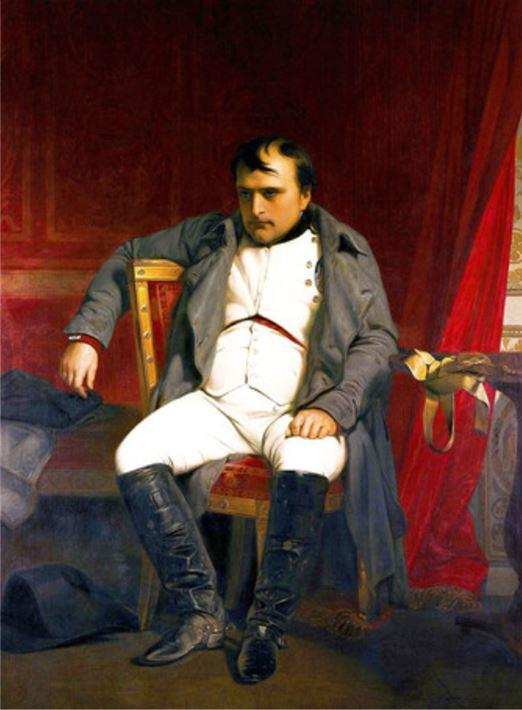Les atermoiements anglais, français et autrichien fâchèrent pour de bon le tsar. Il haussa le ton, jurant qu’il ne reviendrait à aucun prix sur la parole donnée. Après de multiples conciliabules, on décida de tenir une réunion finale pour neuf heures du soir. Les différents points du traité furent à nouveau examinés en détail. Pour aboutir, les représentants de Napoléon furent obligés de renoncer à certaines demandes. Devant l’intransigeance de Talleyrand, le versement d’une rente de deux millions de francs à Marie-Louise fut abandonné. La question de la nationalité de la suite de Napoléon fut également revue.
Il fut convenu qu’au bout de trois ans (contre cinq auparavant), ceux qui l’accompagneraient sur son île perdraient leur qualité de français. Ce point était important car une durée trop courte risquait de décourager les candidats au départ. En accordant trois ans, on permettait aux fidèles de l’empereur de prendre plus sereinement leur décision mais il n’en reste pas moins que cette clause compromettait une installation durable des Français dans l’île. Nous y reviendrons, car il ne s’agit pas ici d’un point de détail.
Enfin, après plusieurs heures de discussion, on parvint au texte final. Le traité dit « de Fontainebleau » comprend 21 articles. Il était assez conforme dans l’ensemble à ce que souhaitait Napoléon. En contrepartie de sa renonciation, pour lui et sa famille à tout droit de souveraineté sur l’Empire français et le Royaume d’Italie (art. 1er), les membres de la famille conservaient leurs titres et qualités « partout où ils se trouve[raient] » (art. 2). L’île d’Elbe, lieu de séjour de l’empereur, devenait une « principauté séparée qui ser[ait] possédée par lui en toute souveraineté et propriété ». Le traité garantissait aussi à l’empereur « un revenu annuel de deux millions de francs en rentes sur le grand livre de France, dont un million réversible à l’impératrice » (art. 3). Remarquons ici que la souveraineté de l’île d’Elbe n’était pas héréditaire. Pour garantir la sécurité de l’île, toutes les puissances s’engageaient « à employer leurs bons offices pour faire respecter par les Barbaresques, le pavillon et le territoire de l’île d’Elbe » (art. 4). L’impératrice se voyait accorder la propriété et la souveraineté des duchés de Parme, Plaisance et Guastalla. Son fils et sa descendance en ligne directe en hériteraient à sa mort (art. 5). Caulaincourt n’obtint donc pas la Toscane comme le souhaitait Napoléon mais les trois duchés formaient malgré tout une jolie de compensation pour sa femme et son fils.
Un revenu net de 2 500 000 francs était réservé à la famille de l’empereur, lui aussi prélevé sur le Grand livre de France (art. 6)26. Joséphine pouvait compter sur un revenu d’un million de francs (art. 7). Pour le prince Eugène, il était seulement convenu qu’il recevrait « un établissement convenable hors de France » sans autre précision (Art. 8). Tout ce que possédait Napoléon en France (art. 9, 10 et 11) restait à la Couronne de France (propriétés, argent, titres et diamants) à l’exception de deux millions de francs employés au versement de gratifications pour les anciens serviteurs de l’empereur. Les dettes de la Maison de l’empereur étaient garanties par le Trésor public (art. 12) et les obligations sur le Mont de Milan (la dette publique italienne) garanties (art. 13). Le traité autorisait aussi le « libre voyage » des souverains, de leur suite et de leurs équipages. Des officiers et des hommes d’escorte appartenant aux troupes alliés leur seraient adjoints (art. 14). Un détachement de la garde impériale française de 1 200 à 1 500 hommes était autorisé à suivre l’empereur jusqu’à son lieu d’embarquement (art. 15).
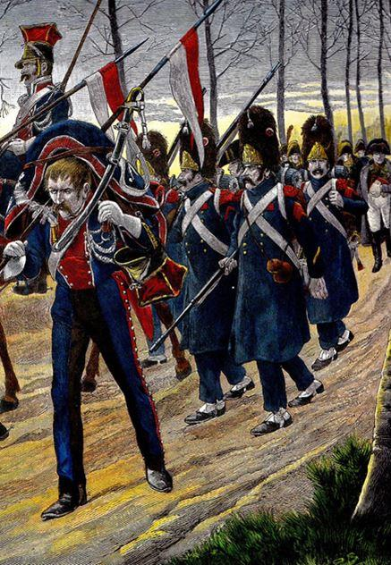Une corvette armée et les bâtiments nécessaires au transport devaient être fournis, la corvette restant ensuite la propriété de l’empereur (art. 16). Sur l’île, Napoléon pouvait conserver comme troupe armée 400 hommes « de bonne volonté » (art. 17).
La suite de Napoléon ou celle de sa famille perdrait donc la nationalité française après trois ans passés hors de France (art. 18). Les soldats polonais qui avaient servi la France avaient la faculté de retourner chez eux en conservant armes et bagages (art. 19). Les puissances alliées signataires du traité, en l’occurrence la Prusse, l’Autriche et la Russie étaient garantes de son application et s’engageaient aussi à le faire ratifier par la France (art. 20). Le dernier article prévoyait une ratification rapide « dans le terme de deux jours ».
À l’aube du 11 avril, signèrent pour Napoléon, Caulaincourt, Ney et Macdonald, pour l’Autriche , le prince de Metternich, pour la Prusse, le baron de Hardenberg et pour la Russie, le comte de Nesselrode. Comme il l’avait promis, Castlereagh ne signa pas. Caulaincourt obtint cependant de lui la promesse écrite que son gouvernement formaliserait bientôt une déclaration d’accession. Le gouvernement provisoire français signa de son côté une déclaration d’adhésion garantissant l’exécution des seuls articles regardant la France27. Suite à cette signature, Caulaincourt remit aux représentants du gouvernement provisoire l’acte d’abdication signé par Napoléon. Une petite cérémonie fut même organisée à cette occasion : « Les membres du gouvernement provisoire avaient voulu donner une sorte de solennité à l’acte d’abdication ; ils avaient convoqué leurs ministres et d’autres personnes de leur parti » commente Macdonald28. Après cette remise, Talleyrand demanda ensuite aux envoyés de Napoléon leur ralliement au nouveau régime. Ney confirma qu’il servirait désormais le roi mais Caulaincourt et Macdonald refusèrent de se soumettre, au grand dam de l’ancien évêque d’Autun : « Talleyrand ne pouvait changer de couleur ni pâlir mais sa figure s’enfla comme bouffie de colère et prête à éclater »29.
Pour que le traité et surtout les déclarations annexes, celles de la France et de l’Angleterre, soient valides, il restait cependant une dernière étape, celle de la ratification en bonne et due forme par les souverains des Etats concernés. Loin d’être une simple formalité, ce processus souvent délicat pouvait tout remettre en cause. Le grand écuyer et le duc de Tarente craignaient ainsi des revirements de dernière minute. Ils eurent bien raison de se méfier car deux pays firent traîner les choses. Le traité fut bien ratifié par le tsar le lendemain 12 avril. François Ier pour l’Autriche et Frédéric Guillaume III pour la Prusse s’exécutèrent le 16 avril.
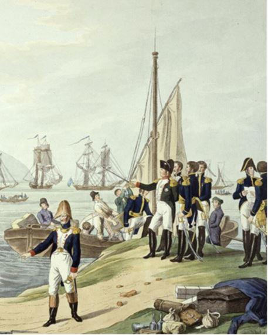Les Britanniques firent en revanche durer le plaisir. Le choix de l’île d’Elbe déplaisait fortement au cabinet britannique. Le premier ministre anglais Lord Liverpool aurait préféré l’Ecosse, les Açores ou même Sainte-Hélène (déjà) comme lieu de résidence pour l’empereur déchu30. Mais il était pour le moment difficile de tout remettre en cause sans fâcher Alexandre. Un refus aurait aussi placé le beau-père de Napoléon, l’empereur d’Autriche, dans une situation délicate. Aussi, une déclaration fut signée le 27 avril par Lord Castlereagh au nom du prince Régent. L’accession ne fut toutefois pas pleine et entière, la déclaration d’accession au traité se fit avec réserves, comme prévu.
L’Angleterre approuvait « les stipulations relatives à la possession en toute souveraineté de l’île d’Elbe et des duchés de Parme, de Plaisance et de Guastalla » mais ne devait pas être « considérée, comme étant, par cet acte d’accession, devenue partie co-contractante […] à aucune des autres stipulations qui y sont contenues ». Autrement dit seules les clauses concernant la souveraineté engageaient la couronne britannique. La question des titres ou les clauses financières étaient pour le moment ignorées : « Les Anglais considérèrent que l’acceptation des stipulations territoriales du traité de Fontainebleau laissait le temps de voir venir les événements sans se lier les mains » opine Thierry Lentz31.
La déclaration signée par le gouvernement provisoire n’engageant pas non plus formellement le roi, Caulaincourt jugea qu’une nouvelle déclaration signée de sa main était indispensable. Louis XVIII n’était jamais intervenu dans la conclusion du traité. Or il lui revenait d’exécuter notamment les clauses financières. Pendant plusieurs jours, il ignora la demande. N’ayant aucune envie de signer, il jouait tout simplement la montre entretenant le secret espoir qu’une fois les troupes alliées parties de France, il pourrait se soustraire à ces obligations, notamment financières, qu’on voulait lui imposer : « Après m’avoir ajourné, on me paie de mauvaises raisons ; on cherche à me circonvenir ; on voulait me persuader que l’accession du gouvernement provisoire et la garantie stipulée par les puissances contractantes devraient me suffire » tempêta le duc de Vicence32. Fin mai, le traité de Paris qui officialisait la paix entre la France et ses anciens ennemis fut signé. Les souverains étrangers étaient donc sur le point de quitter la capitale … et Louis XVIII n’avait toujours pas répondu. Caulaincourt s’adressa une fois encore au tsar pour obtenir satisfaction. Au nom d’Alexandre, le ministre Nesselrode fit pression sur Talleyrand et menaça même de laisser les troupes russes en France jusqu’à ce que le roi signe cette déclaration. La menace produisit un effet immédiat. Dès le lendemain, le prince de Bénévent signa au nom du roi une déclaration confirmant « que les clauses du traité à la charge de la France seront fidèlement exécutées ». Cette déclaration obtenue sous la contrainte ne valait finalement pas grand-chose. Une fois les armées russes parties de France, le roi était en réalité libre de ne pas la respecter. Le souverain de l’île d’Elbe allait bien vite le comprendre.
Mais pour le moment, l’essentiel avait été obtenu : Napoléon avait abdiqué sans heurts et il s’apprêtait à quitter tranquillement la France pour sa petite île méditerranéenne, si proche des côtes italiennes.
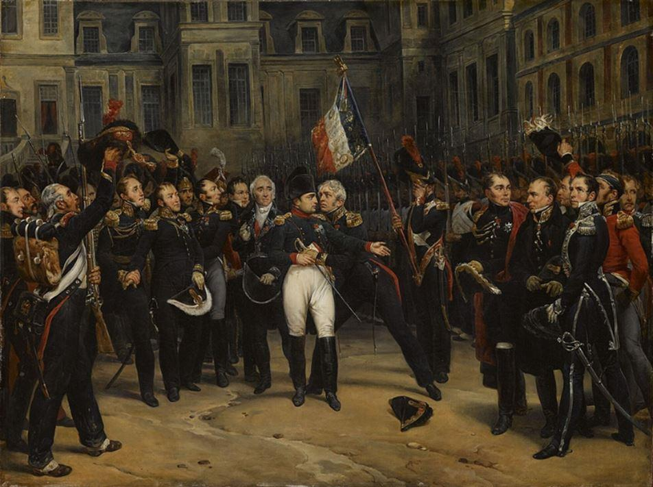
Adieux de Napoléon à la Garde impériale dans la cour du Cheval-Blanc du château de Fontainebleau (Montfort)
Cette mansuétude en étonna plus d’un : « De notre perspective, il semble incroyablement naïf de la part d’hommes aussi expérimentés que les chefs de la Sixième Coalition d’imaginer qu’ils pourraient se débarrasser d’un phénomène tel que Napoléon en le confinant dans une île toscane » remarque l’historien américain Steven Englund33. Les souverains alliés étaient en réalité tout sauf naïfs. Ils étaient conscients que ce traité était dangereux pour la sécurité de l’Europe, y compris Alexandre. Alors pourquoi ce dernier qui avait juré la perte de son plus grand ennemi avait-il été si généreux ? L’amitié entre le tsar et Caulaincourt avait compté. Alexandre qui détestait le mensonge apprécia sans doute l’attitude très digne du grand écuyer de Napoléon. On était entre hommes d’honneur et cela eut son importance. Mais avant tout, la personnalité du tsar fut déterminante : « Cette magnanimité à l’égard de l’empereur déchu peut surprendre tant la lutte entre les deux empereurs a été longue et âpre ; en réalité, elle ne peut se comprendre si l’on ne prend pas en compte les codes politico-diplomatiques alors en usage, mais plus encore l’évolution psychologique et religieuse d’Alexandre Ier » explique Marie-Pierre Rey34. Tout à sa dévotion religieuse, Alexandre pardonna à son pire ennemi, refusant de revenir sur sa parole, malgré les conséquences qu’elle pourrait entraîner.
La foi d’un homme, fût-elle celle de l’empereur de toutes les Russies, ne pouvait servir de ciment à un traité d’une pareille importance. En outre, la puissance russe était la moins concernée par les stipulations territoriales ou financières contenues dans le texte. La Prusse gardait une rancune tenace contre l’ancien empereur des Français et n’allait rien faire pour garantir son application. Les Autrichiens qui reprenaient pied en Italie n’appréciaient guère leur nouveau voisin. Ils allaient de surcroît tout mettre en œuvre pour que Marie-Louise restât à Vienne et ne s’installât pas dans les duchés promis. L’Angleterre n’avait même pas approuvé formellement le traité. La France considérait elle aussi que le nouveau lieu de résidence de l’empereur était trop dangereux pour la paix du continent. De plus, Louis XVIII n’avait aucune envie d’entretenir financièrement Napoléon. Au total, la France était tenue de verser pas moins de 5,5 millions de francs par an pris sur les intérêts de la dette française, ce qui revenait à augmenter celle-ci de près de 10 %35. Consentir un tel effort pour l’ « usurpateur » n’était pas acceptable.
Quant à Napoléon, il n’avait accepté ce traité que du bout des lèvres, restant persuadé que la campagne de France avait été perdue à cause de la lâcheté voire de la trahison de certains. Il n’avait, il est vrai, subi aucune défaite directe et avait abdiqué au milieu d’une Garde impériale à peine entamée. Dans ces conditions, il ne pouvait que nourrir lui aussi un certain sentiment de revanche.
Dès l’origine, le traité de Fontainebleau contenait en lui-même les germes de son futur échec.
P.B.
NOTES ET RÉFÉRENCES
1. Caulaincourt, Mémoires, Paris, Plon, 1933, t. III, p. 264.
2. Ibid., p. 58.
3. Correspondance de Napoléon Ier, publiée par ordre de l’empereur Napoléon III [ci-après simplement : Correspondance ], n° 21546.
4. Caulaincourt, Mémoires, t. III, p. 70.
5. Partisan d’une alliance avec la Russie, Caulaincourt avait même essayé de dissuader Napoléon d’entreprendre sa funeste campagne de Russie en 1812.
6. Caulaincourt, Mémoires, t. III, p. 145.
7. Ibid., p. 153.
8. Ibid., p. 154.
9. Ibid., p. 155 à 158. Toutes les citations qui précèdent sont extraites des pages mentionnées ici.
10. Ibid., p. 161.
11. Ibid., p. 176.
12. Ibid., p. 184.
13. Ibid., p. 224.
14. Macdonald, Souvenirs, Paris, Plon, 1892, p. 281.
15. Caulaincourt, Mémoires, t. III, p. 226.
16. Macdonald, Souvenirs, p. 285.
17. Caulaincourt, Mémoires, t. III, pp. 247-251.
18. Ibid., p. 246. Pour cette affaire, Napoléon ne se fia qu’à Caulaincourt. Il connaissait mal Macdonald nommé maréchal sur le tard (il était un ancien soutien de Moreau) et avait quelques raisons de se méfier de Ney. Le prince de la Moskova correspondait d’ailleurs depuis quelques jours avec Talleyrand l’assurant de son dévouement pour obtenir l’abdication de Napoléon.
19. Ibid.
20. Ibid., p. 258
21. Ibid., p. 291.
22. Lettre de Castlereagh à Lord Bathurst, cité par Jonathan North in Napoleon on Elba – Diary of an Eyewitness of exile, Ravenhall books, p. 21.
23. Caulaincourt, Mémoires, t. III, p. 314.
24. Ibid., p. 309.
25. Ibid., p. 317.
26. Madame mère devait recevoir 300 000 francs, Joseph et sa femme 500 000 francs, Louis 200 000 francs, Hortense et ses enfants 400 000 francs, Jérôme et sa femme 500 000 francs, Elisa 300 000 francs et Pauline la même somme. Caroline et Murat régnant encore à Naples ne furent bien entendu pas compris dans cette répartition.
27. Déclaration du gouvernement provisoire du 11 avril 1814 in Michel Kerautret, Les grands traités de l’Empire (1810-1815), Paris, Nouveau monde éditions, 2004, t. II, p. 131. Dans ses Mémoires (p. 431), Talleyrand cite une version légèrement différente, rajoutant, sans doute pour mieux souligner la « grandeur » de son geste, le motif suivant : « pour donner aux évènements qui ont lieu un caractère particulier de modération, de grandeur et de générosité ».
28. Macdonald, Souvenirs, p. 298.
29. Ibid.
30. Thierry Lentz, Nouvelle histoire du Premier Empire, Paris, Fayard, 2010, t. IV, p. 157.
31. Ibid.
32. Lettre du 26 mai 1814 à Napoléon cité par Caulaincourt, Mémoires, t. III, p. 408.
33. Steven Englund, Napoléon, Editions de Fallois, Paris, 2004, p. 511.
34. Marie-Pierre Rey, Alexandre Ier, Paris, Flammarion, 2009, p. 340.
35. Sur les explications concernant la rente 5 % voir notre article dans Quand Napoléon inventait la France - Dictionnaire des institutions politiques, administratives et de cour du Consulat et de l’Empire, Paris, Tallandier, 2008.
Partager cette page